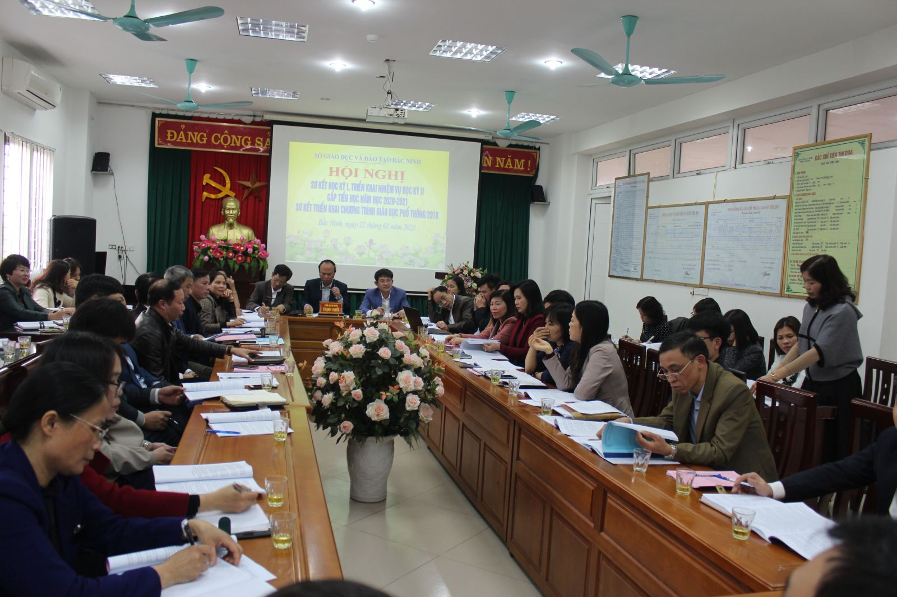
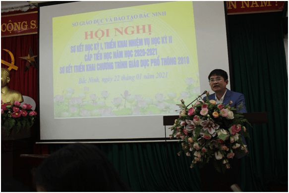

Hội nghị sơ kết học kỳ I, triển khai nhiệm vụ học kỳ II và Sơ kết triển khai thực hiện chương trình Giáo dục phổ thông 2018 đối với lớp 1 năm học 2020-2021
Ngày 22/01/2021, tại Trường Tiểu học Suối Hoa, thành phố Bắc Ninh, Sở Giáo dục và Đào tạo (GDĐT) tổ chức Hội nghị Sơ kết học kì I, triển khai nhiệm vụ học kì II cấp tiểu học, năm học 2020-2021 và Sơ kết triển khai thực hiện Chương trình giáo dục phổ thông (CTGDPT) 2018 đối với lớp 1 năm học 2020-2021.
Tham dự Hội nghị có đồng chí Trịnh Khôi, Phó Giám đốc Sở GDĐT; lãnh đạo, chuyên viên phòng Giáo dục tiểu học (GDTH), Sở GDĐT; lãnh đạo, chuyên viên phụ trách tiểu học các phòng GDĐT huyện (thị xã, thành phố) và đại diện cán bộ quản lý (CBQL), giáo viên đang dạy học lớp 1 các trường tiểu học trên địa bàn tỉnh.

Toàn cảnh Hội nghị
Thay mặt lãnh đạo phòng GDTH, Sở GDĐT, đồng chí Phí Hữu Quynh, Trưởng phòng GDTH trình bày báo cáo sơ kết học kì I, triển khai nhiệm vụ học kì II cấp tiểu học năm học 2020-2021 và báo cáo sơ kết triển khai thực hiện CTGDPT 2018 đối với lớp 1 năm học 2020-2021. Học kì I, năm học 2020-2021, cấp tiểu học Bắc Ninh đạt được những kết quả nổi bật: Quy mô trường, lớp tiếp tục được mở rộng; các trường chủ động xây dựng và triển khai kế hoạch giáo dục thực hiện song song hai CTGDPT: CTGDPT 2018 đối với lớp 1 và CTGDPT hiện hành đối với lớp 2 đến lớp 5 theo hướng phát triển phẩm chất, năng lực học sinh, tiếp cận CTGDPT 2018; tiếp tục đẩy mạnh đổi mới phương pháp, hình thức tổ chức dạy học và đánh giá học sinh; chất lượng giáo dục học kì I tiếp tục được duy trì ở mức cao, kết quả học tập môn tiếng Anh có nhiều chuyển biến tốt; công tác quản lý và phát triển đội ngũ giáo viên tiểu học tiếp tục được duy trì; kết quả phổ cập giáo dục tiểu học được củng cố vững chắc, đảm bảo hiêu quả kiểm định chất lượng giáo dục và xây dựng trường đạt chuẩn quốc gia. Sau một học kì triển khai thực hiện CTGDPT 2018 cấp tiểu học tỉnh đạt được một số kết quả: làm tốt công tác truyền thông; triển khai đầy đủ kịp thời việc rà soát, lựa chọn bồi dưỡng đội ngũ giáo viên đáp ứng yêu cầu đổi mới CTGDPT 2018; công tác xây dựng, biên soạn tài liệu giáo dục địa phương được thực hiện theo đúng quy định, chất lượng giáo dục lớp 1 ổn định so với năm học trước.

Đồng chí Phí Hữu Quynh, Trưởng phòng GDTH, sở GDĐT báo cáo sơ kết học kì I, triển khai nhiệm vụ học kì II cấp tiểu học, sơ kết triển khai thực hiện CTGDPT 2018 đối với lớp 1 năm học 2020-2021
Hội nghị đã thống nhất cao với những kết quả đã đạt được của giáo dục tiểu học tỉnh Bắc Ninh và có 10 ý kiến trao đổi của các đại biểu đại diện cán bộ quản lý, giáo viên đóng góp vào dự thảo báo cáo, đồng thời đưa ra đề xuất kiến nghị với các cơ quan quản lý.
Phát biểu kết luận Hội nghị, đồng chí Trịnh Khôi, Phó giám đốc Sở GDĐT thống nhất những kết quả bậc học đã đạt được trong học kì I vừa qua, đồng thời chỉ đạo toàn bậc học phát huy kết quả đã đạt được, khắc phục tồn tại hạn chế để triển khai hiệu quả nhiệm vụ và giải pháp đã chỉ ra trong học kì II. Đồng chí nhấn mạnh:
Về việc triển khai nhiệm vụ học kì II, toàn cấp học thực hiện nghiêm túc chương trình, kế hoạch thời gian năm học do Bộ GDĐT, Chủ tịch UBND tỉnh ban hành; tích cực đổi mới phương pháp dạy học, dạy học 2 buổi/ngày trong đó chú trọng điều chỉnh nội dung dạy học phù hợp với đặc điểm tâm sinh lí học sinh, đổi mới phương pháp dạy học tiếp cận CTGDPT 2018 đối với lớp 2 đến lớp 5, nhất là chuẩn bị cho học sinh lớp 5 bước vào lớp 6 năm học 2021-2022; triển khai có hiệu quả phong trào xây dựng thư viện thân thiện và phát triển văn hóa đọc cho học sinh; tăng cường quản lý chỉ đạo và kiểm tra chất lượng dạy và học đối với các trường dạy học tiếng Anh có yếu tố nước ngoài theo hình thức xã hội hóa; tổ chức tốt các hội thi giáo viên tiểu học dạy giỏi, chủ nhiệm lớp giỏi cấp tỉnh, các cuộc thi, sân chơi các cấp; triển khai Chương trình “Sữa học đường” giai đoạn 2021-2025 cho học sinh tiểu học trong tỉnh; tiếp tục tham mưu với chính quyền địa phương bổ sung diện tích đất, đầu tư xây dựng cơ sở vật chất, cảnh quan sư phạm trường học, nâng cao chất lượng trường chuẩn quốc gia đáp ứng nhu cầu triển khai CTGDPT 2018 giai đoạn 2021-2025; tiếp tục thực hiện và chỉ đạo việc đẩy mạnh ứng dụng công nghệ thông tin trong quản lý, dạy và học; cán bộ quản lý tiểu học tiếp tục đổi mới phong cách làm việc, tạo chyển biến tích cực trong quản lý chỉ đạo.
Về việc triển khai thực hiện CTGDPT 2018, tiếp tục thực hiện tốt công tác tham mưu, tuyên truyền, vận động sự ủng hộ của các lực lượng xã hội tạo điều kiện tốt nhất cho việc thực hiện CTGDPT 2018; tập trung triển khai chuẩn bị đội ngũ giáo viên đủ về số lượng, đồng bộ về cơ cấu, tổ chức tập huấn, bồi dưỡng giáo viên theo hướng dẫn của Bộ GDĐT trong đó chú trọng giữ ổn định giáo viên lớp 1, lựa chọn giáo viên dạy lớp 2; tham mưu với UBND tỉnh ban hành tiêu chí, thành lập các hội đồng lựa chọn sách giáo khoa để chọn được ra các đầu sách giáo khao có chất lượng, phù hợp điều kiện thực tế của tỉnh Bắc Ninh.
Đồng chí Trịnh Khôi, Phó giám đốc Sở GDĐT phát biểu chỉ đạo Hội nghị